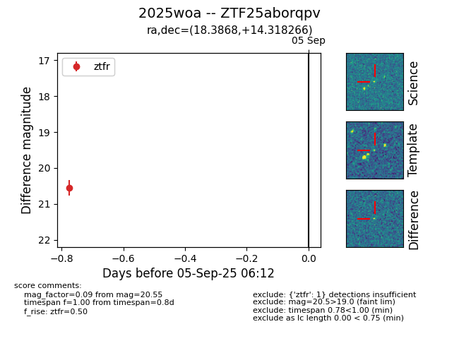

FINK: ZTF25aborqpv
Lasair: ZTF25aborqpv
ALeRCE: ZTF25aborqpv
TNS: 2025woa
YSE: 2025woa
ZTF25aborqpv (ztf,fink)
2025woa (tns,yse)
equatorial (ra, dec) = (18.3868,+14.31827)
galactic (l, b) = (130.9821,-48.20760)

last ztfr=20.55
1 ztfr detections